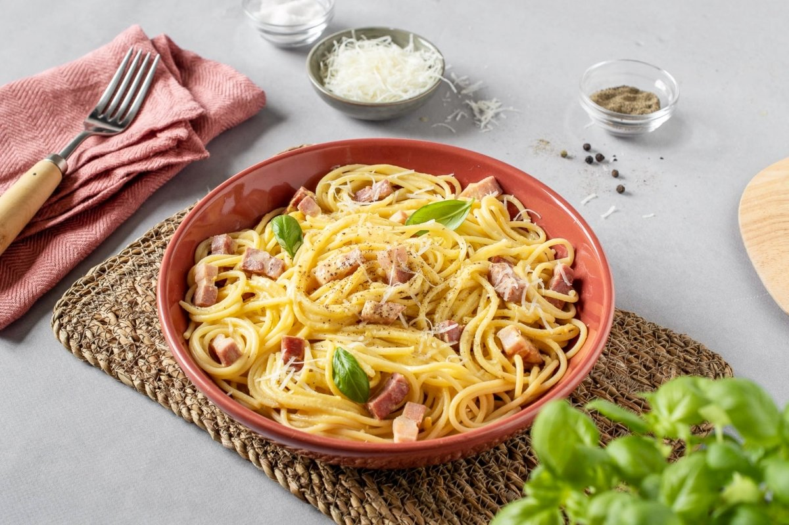

Spaghetti a la Carbonara
Ingredientes:
- 400g de spaghetti
- 150g de panceta o tocino, cortada en tiras
- 3 huevos
- 100g de queso parmesano rallado
- Pimienta negra recién molida
- Sal al gusto
Instrucciones:
- Cocina los spaghetti en agua con sal hasta que estén al dente.
- Mientras tanto, en una sartén grande, fríe la panceta o tocino hasta que esté crujiente.
- En un tazón, bate los huevos junto con el queso parmesano rallado y una buena cantidad de pimienta negra.
- Escurre los spaghetti y resérvalos, conservando un poco del agua de cocción.
- Retira la sartén del fuego y agrega los spaghetti directamente a la sartén con la panceta.
- Vierte la mezcla de huevo y queso sobre los spaghetti, revolviendo rápidamente para que la salsa se adhiera a la pasta sin cuajarse.
- Añade un poco del agua de cocción reservada si es necesario para obtener una textura cremosa.
- Sirve los spaghetti a la carbonara inmediatamente, acompañados de más queso parmesano y pimienta negra al gusto.